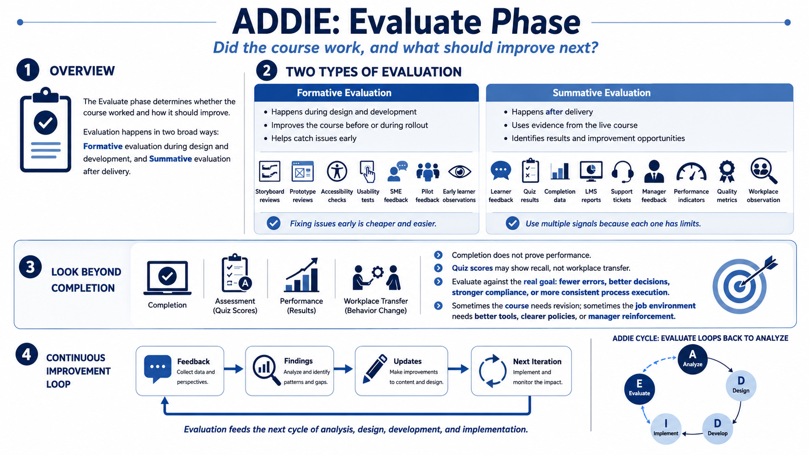

Evaluate - Measuring Quality and Impact
Connecting to LMS... Progress: in progress

Narration
The Evaluate phase asks whether the course worked and how it should improve. Evaluation happens in two broad ways. Formative evaluation occurs during design and development, when feedback can still shape the course before or during rollout. Summative evaluation occurs after delivery, when the team looks at course results, learner outcomes, and improvement opportunities.
Formative evaluation can include storyboard reviews, prototype reviews, accessibility checks, usability tests, pilot feedback, SME feedback, and early learner observations. The purpose is to improve the course before the full audience experiences it. A confusing interaction, weak example, poor caption, or mismatched quiz question is much easier to fix before launch than after a compliance deadline.
Summative evaluation uses evidence after delivery. Common signals include learner feedback, quiz results, completion data, LMS reports, support tickets, manager feedback, performance indicators, quality metrics, and workplace observation. Each signal has limits. Completion data tells you whether learners finished, but not necessarily whether they can perform. Quiz results may show recall, but not always workplace transfer.
Useful evaluation looks beyond attendance and completion. If the course was meant to reduce errors, improve decisions, support compliance, or standardize a process, look for evidence connected to that outcome. Sometimes the evidence shows the course needs revision. Sometimes it shows the course is fine but the job environment needs better tools, clearer policies, or manager reinforcement.
Evaluation should feed the next iteration. Capture what worked, what confused learners, what reviewers flagged, what data changed, and what updates are needed. ADDIE becomes a cycle when evaluation informs future analysis, design, development, and implementation.